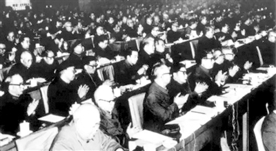

<!DOCTYPE html>
<html style="font-size: 12px !important;">
	<head>
		<meta charset="utf-8" />
		<meta charset="UTF-8">
		<meta name="viewport" content="width=device-width,user-scalable=no,initial-scale=1" />
		<link rel="stylesheet" href="css/rest.css" />
		<link rel="stylesheet" href="css/whole.css" />
		<script type="text/javascript" src="js/mui.min.js"></script>
		<script src="js/util.js"></script>
		<script src="js/index.js"></script>
		<script type="text/javascript" src="js/jquery-1.11.1.min.js"></script>
		<script>
			document.documentElement.style.fontSize = innerWidth / 32.5 + 'px';
			onresize = function() {
				document.documentElement.style.fontSize = innerWidth / 32.5 + 'px';			
			}
		</script>
		<script type="text/javascript" src="js/index.js"></script>
	</head>
	<body id="body">
		<header>
			<div class="header_img"></div>
		</header>
		<h3 class="nav_title"></h3>
		<div>
			<p class="nav_time"></p>
			<span class="nav_articlesource"></span>
		</div>		
		<p class="nav_writer"></p>
		
		<div id="info_box" style="font-size: 12px !important;box-sizing: border-box !important;padding: 5px 20px !important;"></div>
		
		<!--<nav>
			<h3>王复生：为理想而献身的第一位云南籍共产党员</h3>
			<p>2018-10-12</p>
		</nav>
		<section>
			<hgroup>作者：丁怡全</hgroup>
			<p>王复生是云南籍第一位共产党员。他是一个为理想而献身的革命者，是云南人民的优秀儿子。”云南省祥云县“红色传承”教育基地管理中心主任王锦琼介绍烈士王复生的事迹时，总是满怀深情。</p>
			<p>王复生，原名王濡廷，1896年9月出生于云南省祥云县。1917年考入北京大学文科预科班。受五四运动和新文化思想的熏陶，王复生开始接受马克思主义。1920年3月，在李大钊的指导下，王复生与邓中夏等19人发起成立了中国第一个马克思主义研究团体——北京大学马克思学说研究会，在北京等地积极宣传介绍马克思主义，开展工人运动和学生运动。</p>
			<div class="hgroup_box"></div>
			<p>1920年11月，李大钊建立北京社会主义青年团，王复生是第一批入团的团员之一。1921年秋转为中国共产党党员。</p>
			<p>在宣传马克思主义的同时，王复生还参加了李大钊、邓中夏等领导的早期北方工人运动。1921年秋，王复生受党组织派遣先后到陕西华县、绥德和广州等地建立党的组织，宣传马克思主义。与此同时，王复生引领自己的两个弟弟王德三、王馨廷先后走上革命道路。</p>
			<p>（责任编辑：曾龙）</p>
		</section>-->
		<p class="nav_editor"></p>
		<footer>
			<div class="footer_book">
				<p class="footer_01"></p>
				<p class="footer_02"></p>
				<p class="footer_03"></p>
			</div>
		</footer>
	</body>
	<script type="text/javascript">
		getInfo();
		getFooter();
		var timer = setTimeout(function() {
			var body = document.getElementById('body');
			body.hidden = false
		}, 500)

		function getInfo() {
			var url=createAjaxURL(allMthod.getInfo)
			var data = {
				partybdid:localStorage.getItem('partybdid')
			};
			var success =function(response){
				var info_box =document.getElementById('info_box');
				info_box.innerHTML ='';
				info_box.innerHTML =response.articletext;
				$('.nav_title').text(response.title);		
				$('.nav_time').text(response.createdate);				
				if(response.writer.length>1){
					$('.nav_writer').text("作者:"+response.writer);	
				}
				$('.nav_articlesource').text("来源："+response.articlesource);
				$('.nav_editor').text(response.editor)
			}
			util.ajax.getJSON(url,data,success);
		}
		
		  function getFooter(){
		   	var url=createAjaxURL(allMthod.getJson)
		   	data={
		   	
		   	};
		   	var success =function(response){
		   		var list_footer =response.list2;	   		
					$('.footer_01').text(list_footer[0].infoname);
					$('.footer_02').text(list_footer[0].infocopys);
					$('.footer_03').text(list_footer[0].infophone);
		   		}
		 	util.ajax.getJSON(url,data,success);
		   }
	</script>
</html>
